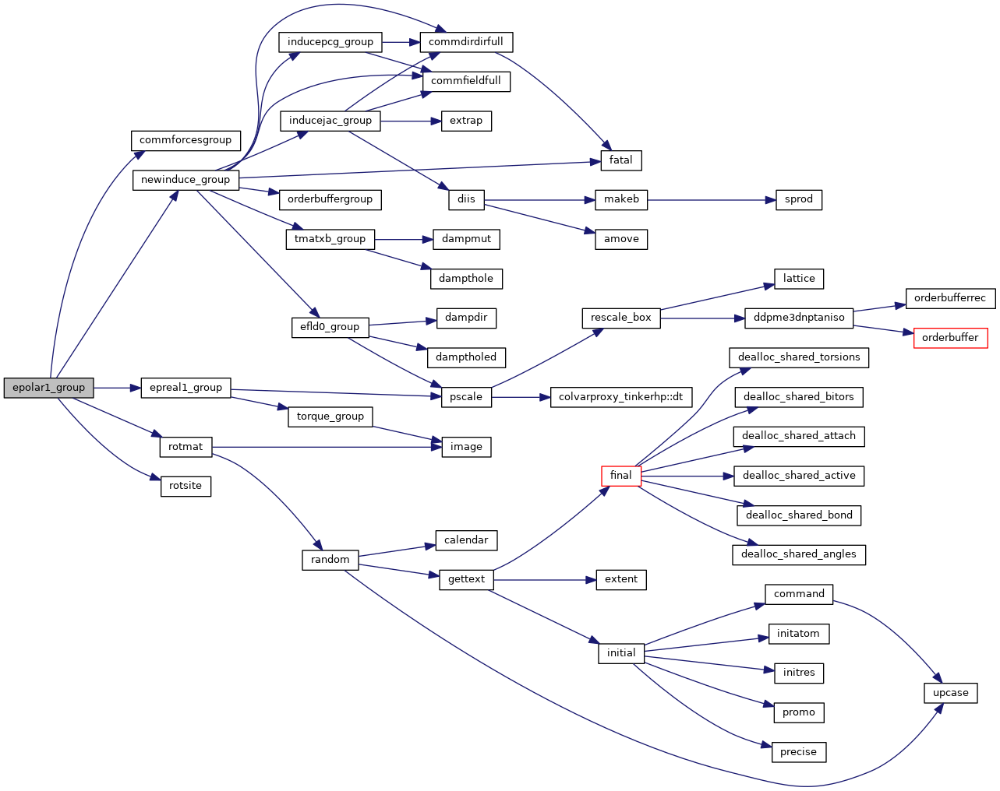
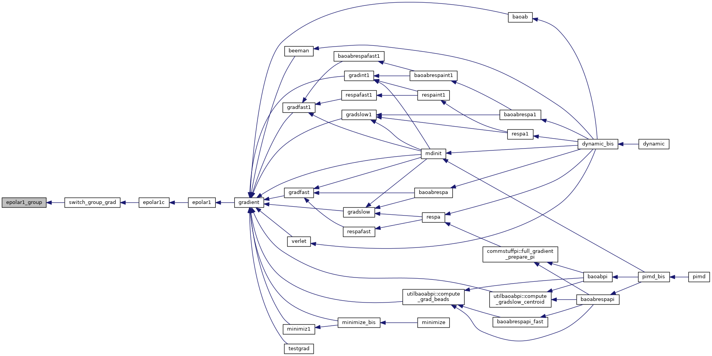
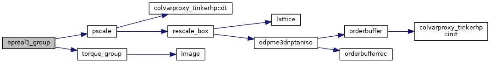
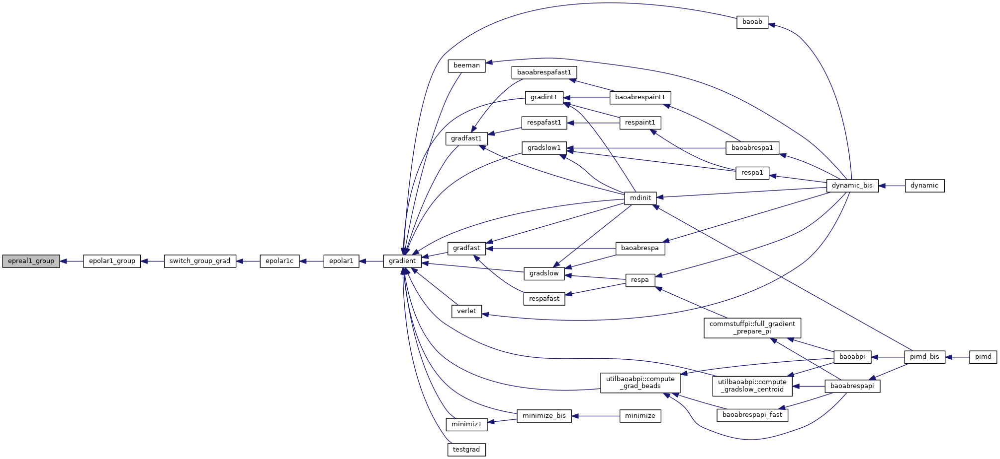

|
Tinker-HP v1.3
|
|
Tinker-HP v1.3
|
Go to the source code of this file.
Functions/Subroutines | |
| subroutine | epolar1_group |
| calculates the dipole polarization energy and derivatives with respect to Cartesian coordinates using a subset of atoms in gaz phase More... | |
| subroutine | epreal1_group |
| "epreal1_group" evaluates the polarization energy and gradient due to dipole polarization of a subset of atoms More... | |
| subroutine epolar1_group | ( | ) |
calculates the dipole polarization energy and derivatives with respect to Cartesian coordinates using a subset of atoms in gaz phase
| no | params |
Definition at line 23 of file epolar1_group.f90.
References commforcesgroup(), epreal1_group(), newinduce_group(), rotmat(), and rotsite().
Referenced by switch_group_grad().


| subroutine epreal1_group | ( | ) |
"epreal1_group" evaluates the polarization energy and gradient due to dipole polarization of a subset of atoms
| no | params |
Definition at line 105 of file epolar1_group.f90.
References pscale(), and torque_group().
Referenced by epolar1_group().


 1.8.5
1.8.5